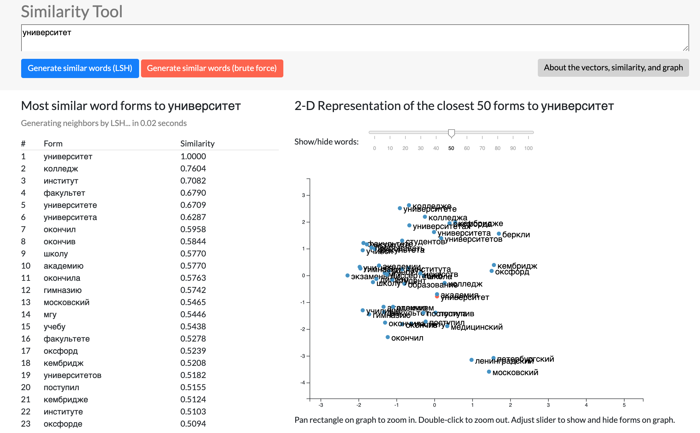
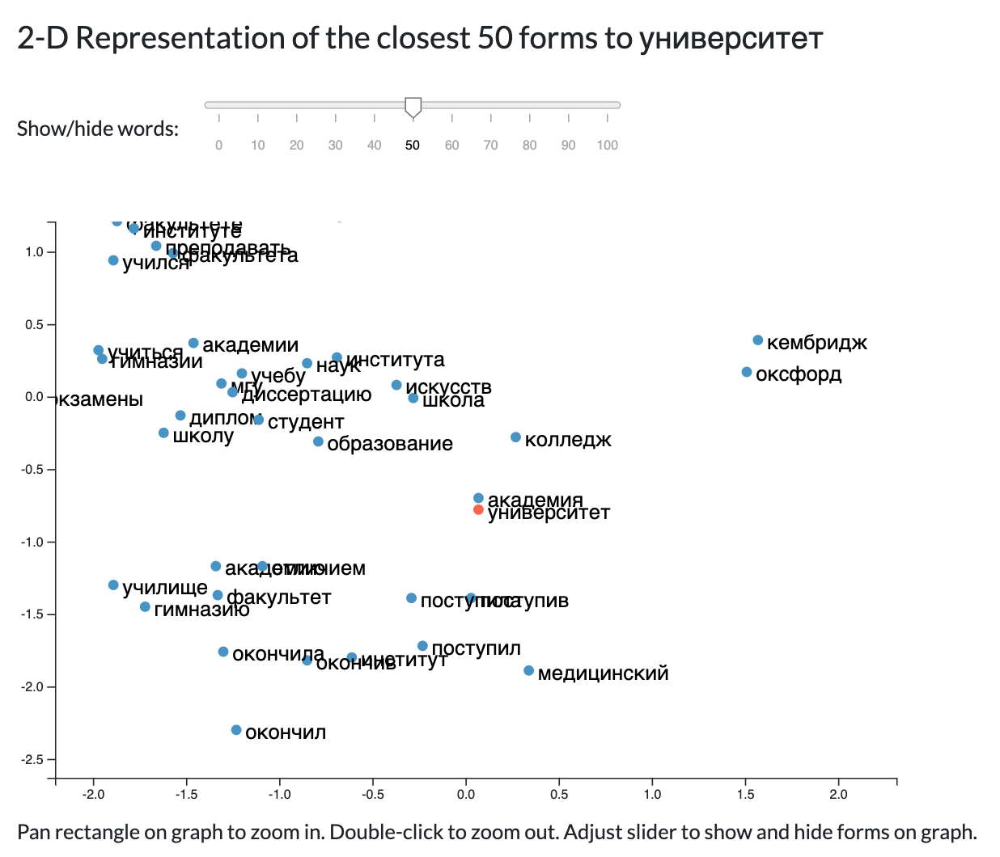
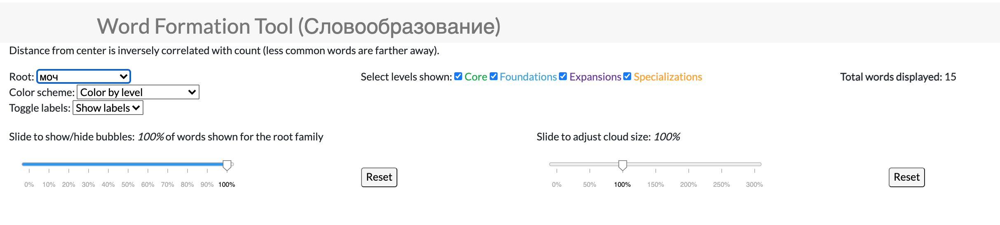
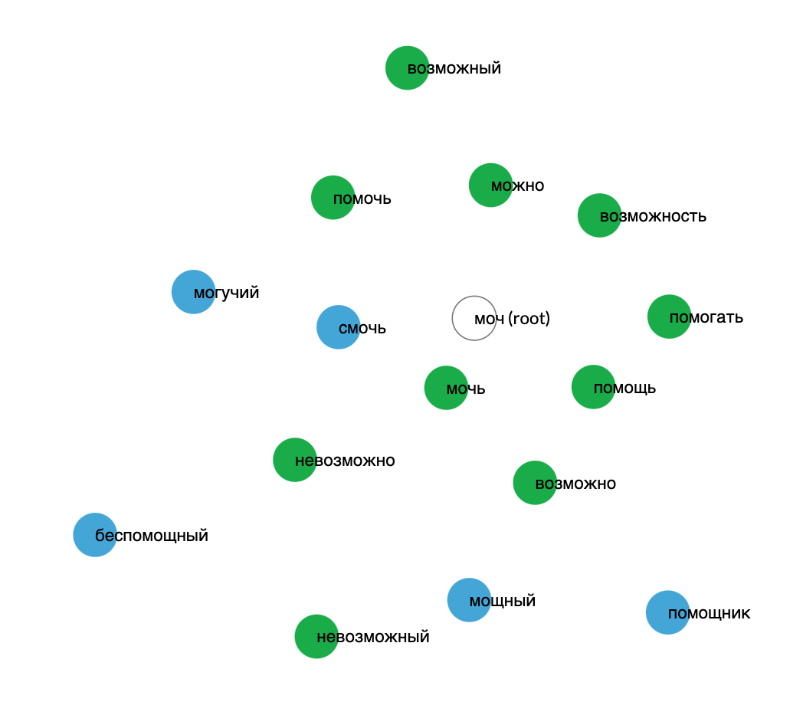
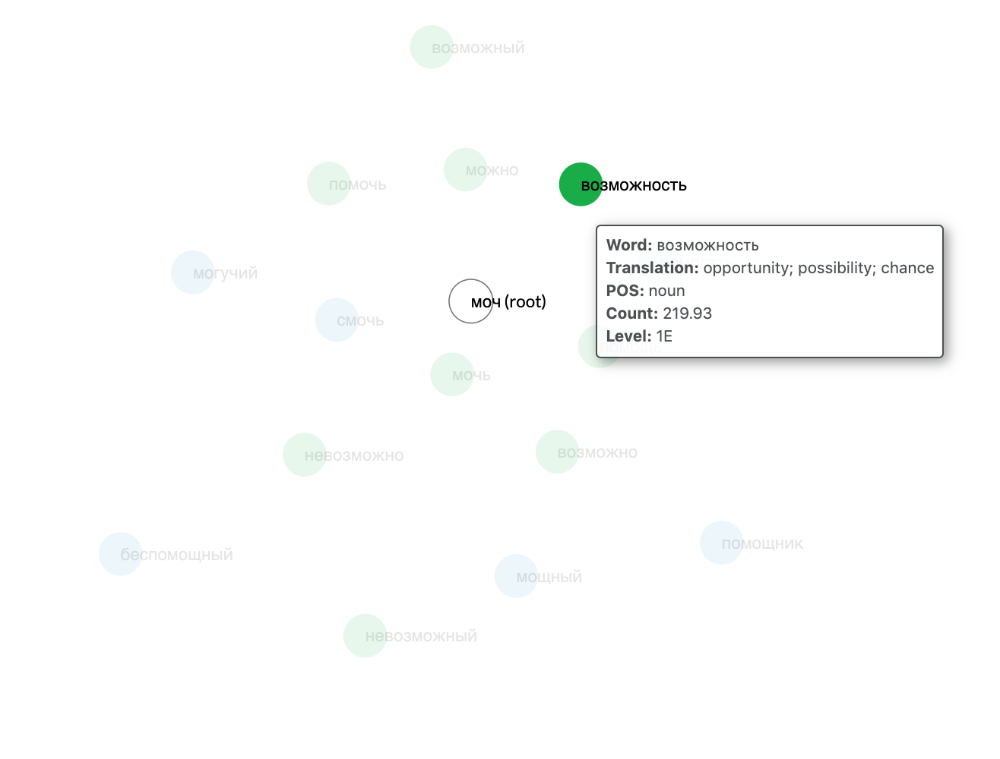
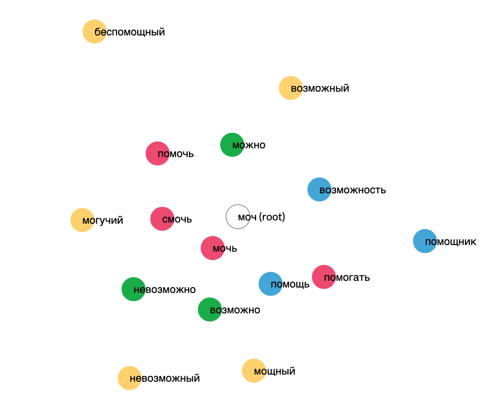
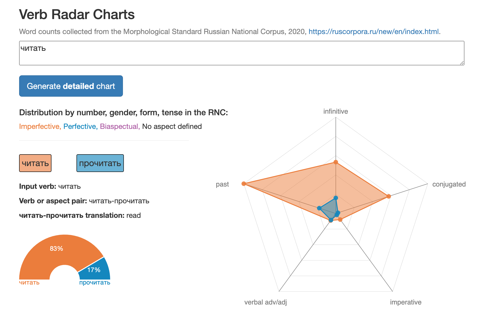
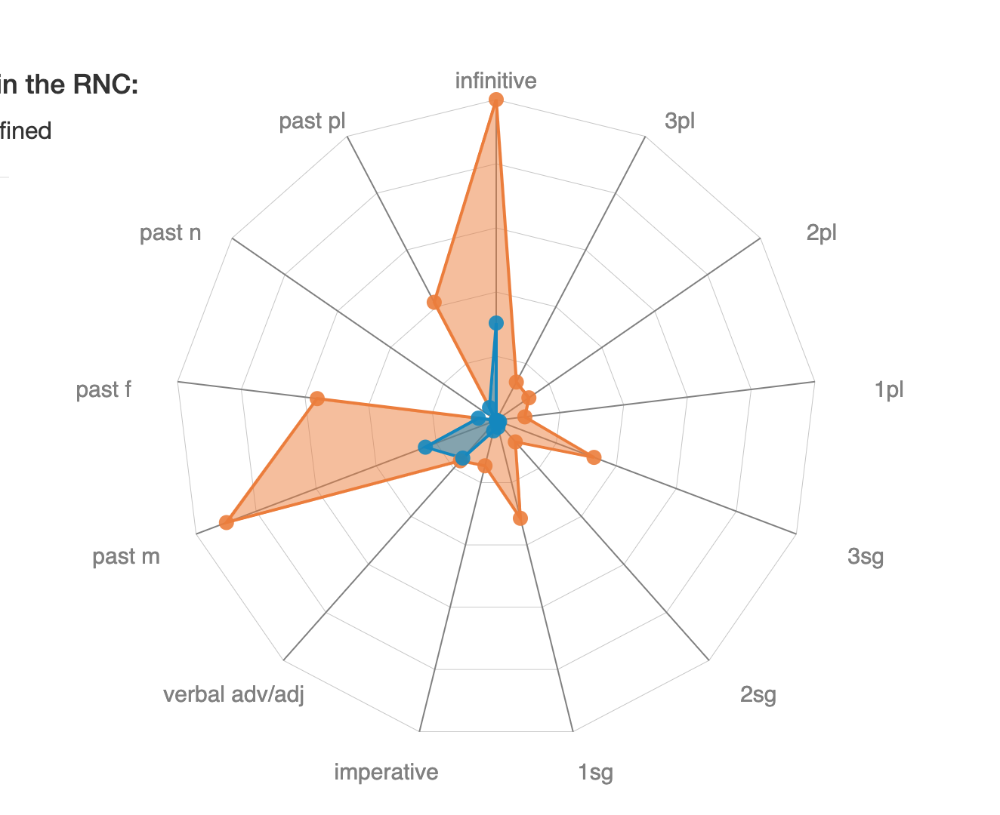
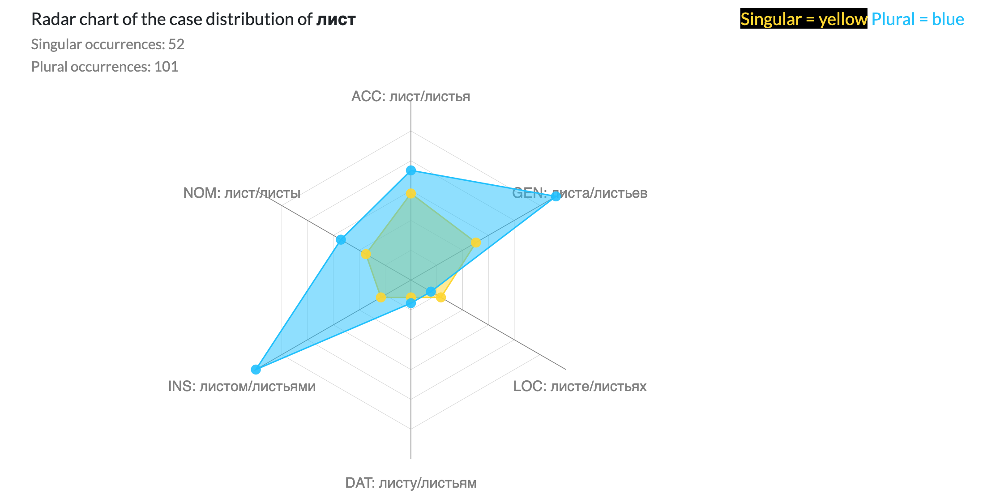
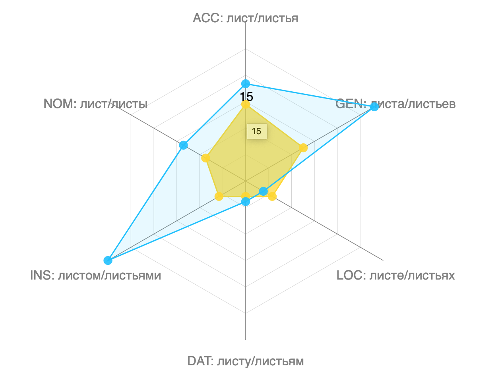

Visualizing Russian
I have supported the Visualizing Russian project by helping to brainstorm, design, prototype, and implement various data-based web tools for Russian language learning in D3.js, Javascript, HTML, and CSS. For many of the tools, I designed novel visualizations based on language data. Some of the tools featured on the site are Quick Lemma, Word Formation, Similarity Tool, Verb Histograms, and the Case Radar Charts.
From the Visualizing Russian website:
Visualizing Russian (https://visualizingrussian.fas.harvard.edu) is a suite of tools benefiting language learners, teachers, and researchers and enabling each user-group to access the complex system of the Russian language through visualization methods in order to leverage the powers of compression and expansion of a massive dataset.
Tools developed so far analyze texts for relative difficulty with regard to vocabulary content, create frequency lists and display word forms used for each lemma in a text, compare target vocabulary to coverage in a text, identify the most commonly used word forms for a lemma, compare the relative frequency of near-synonyms or other items in a semantic domain, show the usage of nouns with various cases or verbs with various person/number/tense/aspect combinations, and identify the case governance or preposition usage of Russian verbs.
Additional tools break down word-formation for prefixes-roots-suffixes in words and identify the field of morphologically-related or semantically-related words for any target word. These tools have contributed to the creation of a new Russian textbook series, Foundations of Russian (Clancy, Egorova, Green, Willis, forthcoming from Routledge Publishers), which presents a 4000-word vocabulary based on the most frequently occurring and communicatively necessary words in Russian.
You can try any of the live tools on the Visualizing Russian website

Above: Example of the text parsing tool on the first few paragraphs of Anna Karenina. Words are colored by level, and users can click on any word to see extended grammatical information on the right hand side.
Here, the parser shows that the word smeshalos' or смешалось is a perfective verb that occurs in the neuter past form. The verb smeshat'sa (here meaning "to become mixed up/confused") is shown to have a 30-70 split of the imperfective vs. perfective forms based on frequency data in our database.
Similarity Mapper: Ranking Word Embeddings
Below: Demo of the Similarity Tool on the word "university" (universitet/университет). The ranked list of similar word (forms) and a graph of similar word vectors. The 300-dimension vectors are squished down to 2-dimensions using principal component analysis.
Below: Panning a rectangular on the graph allows a user to zoom in on a certain section of the graph. In this area, we see several of the words similar to university, such as academia, education, apply, graduated, student, college, etc. The two dots off to the right say Cambridge and Oxford.
Quick Lemma: Word Frequency Over Time
Quick Lemma is a tool in the Visualizing Russian suite that presents frequency data about different sets of words.
This screenshot shows a comparison of Monday, Tuesday, Wednesday, Thursday, Friday, Saturday, Sunday in Russian. The most frequent word is Wednesday, sreda (среда), which makes sense, because sreda actually has a meaning other than the day of the week. Sreda also means environment or medium, so the word itself has a higher frequency than other words. The graph on the right also shows that Sunday, or vosrekresene (воскресенье), has a generally higher frequency than the other days of the week. This can be attributed to voskresene's true meaning, which is"resurrection."

Word Formation: For Learning Word Roots
The name for the Word Formation tool in Russian is slovoobrazovanie (словообразование), literally meaning "word formation" or "word derivation". Like the name suggests, the tool presents information related to word roots, showing users the common derivation of different families of words. Learning the meaning or association of different word roots can be very helpful to Russian language learners because in Russian the 228 most common roots produce upwards of 20,000 words, an average of 90 words per root (source).
Below: Demo of the Word Formation tool on the root moch (моч) which refers to the meaning "to be able." Note that a word circle's distance from the center of the cloud indicates its frequency. More frequent words are closer to the center, less frequent words are farther away. See the legend in the dashboard for the leveling based on the database:
 Below: Information tooltip displayed on hovering over the word circle for vozmozhnost' (возможность):
Below: Part of speech legend and demo of coloring the word circles by part of speech:
Case Distribution Tool: Radar Charts
In my research, I have been experimenting with building radar charts, also called spider charts or web charts, to present linguistic information. These are a two-dimensional chart type designed to plot one or more series of values over multiple quantitative variables. Each variable has its own axis, all axes are joined in the center of the figure. These types of charts are sometimes criticized for being difficult or misleading to interpret because of its circular layout, often random category ordering, and portrayal of point information as area. However, I have found that they are an effective graph for showing linguistic information that is based on relative frequency of categorical information.
Below: Demo of the verb distribution tool on the verb chitat' (читать), meaning "to read." The graph shows both the imperfective and perfective forms of the verb. (Roughly, imperfective is used when the action is incomplete, while perfective is used when the action is complete.) The aspect gauge in the bottom left shows that "to read" more frequently occurs in the imperfective aspect than the perfective aspect, implying that people more often refer to the "process" of reading rather than the "completion" of reading.
Below: Chart showing the verb form breakdown in more detail. In the texts in the corpus, the verb seems to show up most frequently in its imperfective infinitive form ("to read") and imperfective past masculine form ("he read"). In the present tense, chitat' is most frequently found in its first person singular ("I read") and third person singular ("we read") forms.
Demo of the case distribution tool on list (лист) meaning "leaf" in Russian. The dots indicate the frequency with which the singular or plural form of the word occurs in each case category. The graph shows that the word list more frequently shows up in plural than singular, and especially in the instrumental case (with leaves) and the genitive case (of leaves):
Below: Count from the abridged Russian National Corpus shown on hover:
